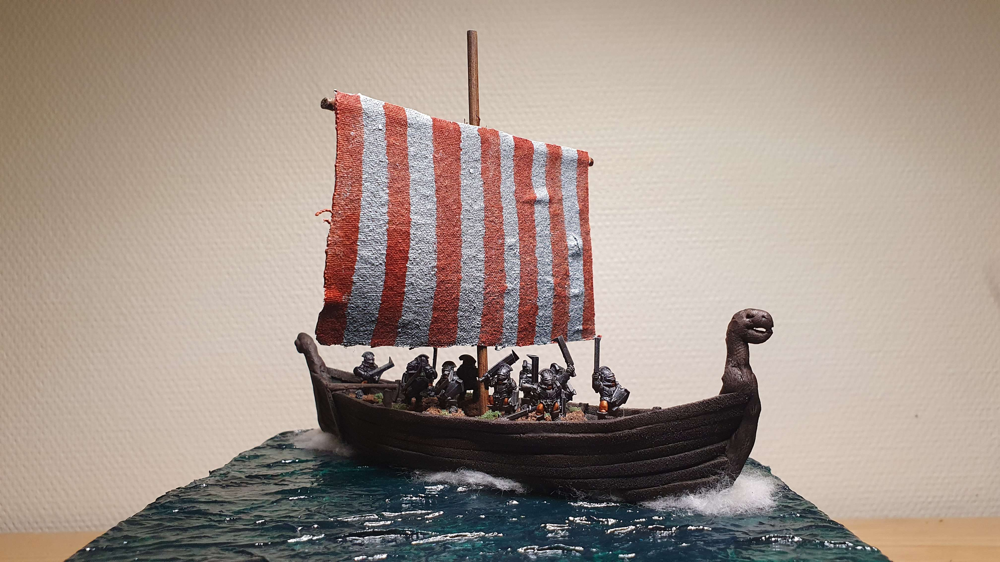

"Harald and Svein first met as foes,
Where the Nis in the ocean flows;
For Svein would not for peace entreat,
But, strong in ships, would Harald meet.
The Norsemen prove, with sword in hand,
That numbers cannot skill withstand.
Off Halland's coast the blood of Danes
The blue sea's calm smooth surface stains."
From Heimskringla by Snorri Sturlason
Slaget vid Nissan ("The Battle of Niså") was a naval battle fought on 9 August 1062 between the forces of Norwegian king Harald Hardrada and king Sweyn II of Denmark.
With this tabletop miniatures game we're trying to recreate the battle itself, how it could have looked, and also if it could have ended in another way. The game will include a one-of-a-kind model of the coastal area outside of present-day city of Halmstad.
When the game is complete, we will display it at various places — both as a piece of art, and as an interactive installation that can be played by the public.
If you know a good place for us to show the game, please get in touch.
The game is made by the following people: